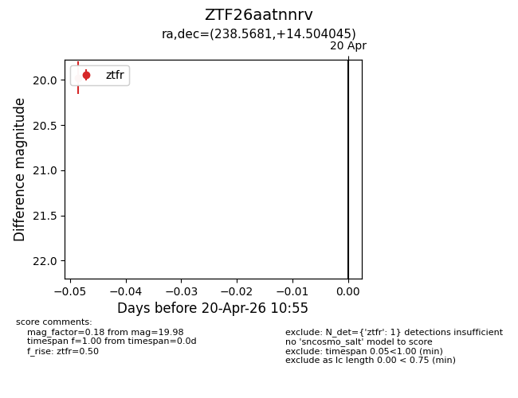
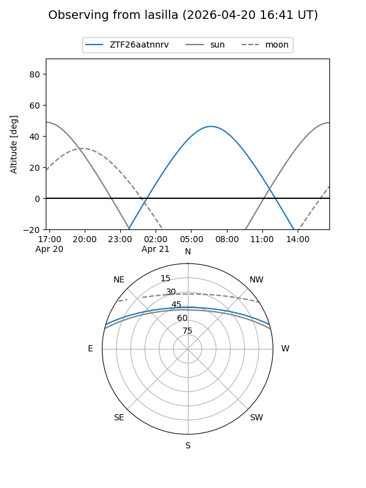
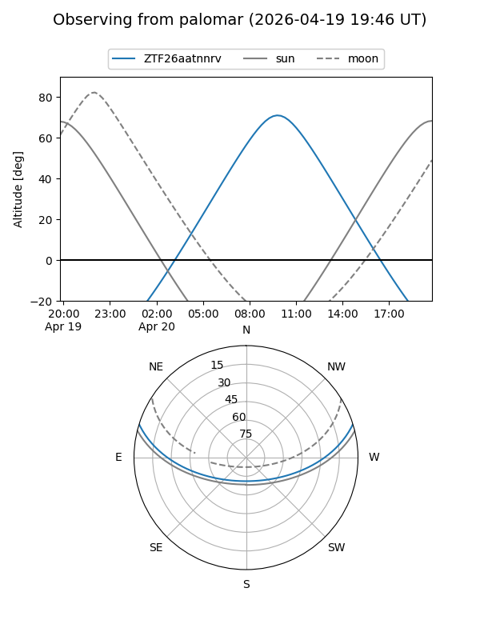

ZTF26aatnnrv
Target ZTF26aatnnrv at 2026-04-20 11:05
Aliases and brokers:
FINK: link
Lasair: link
ALeRCE: link
alt names
ZTF26aatnnrv (ztf,fink_ztf)
Coordinates:
equatorial (ra, dec) = 238.5681,+14.50404
equatorial (HMS+DMS) = 15:54:16.33,+14:30:14.56
galactic (l, b) = (25.9087,+45.71532)
Flags:
Photometry:
last ztfr=19.98
1 ztfr detections
Lightcurve

Visibility


Additional plots